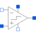

IdealOpAmpLimitedIdeal operational amplifier with limitation |

|
Information
This information is part of the Modelica Standard Library maintained by the Modelica Association.
The ideal OpAmp with limitation behaves like an ideal OpAmp without limitation, if the output voltage is within the limits VMin and VMax. In this case the input voltage vin = in_p.v - in_n.v is zero. If the input voltage vin less than 0, the output voltage is out.v = VMin. If the input voltage is vin larger than 0, the output voltage is out.v = VMax.
Connectors (5)
| in_p |
Type: PositivePin Description: Positive pin of the input port |
|
|---|---|---|
| in_n |
Type: NegativePin Description: Negative pin of the input port |
|
| out |
Type: PositivePin Description: Output pin |
|
| VMax |
Type: PositivePin Description: Positive output voltage limitation |
|
| VMin |
Type: NegativePin Description: Negative output voltage limitation |
Used in Examples (1)
|
Modelica.Electrical.Analog.Examples
Inverting amplifier |